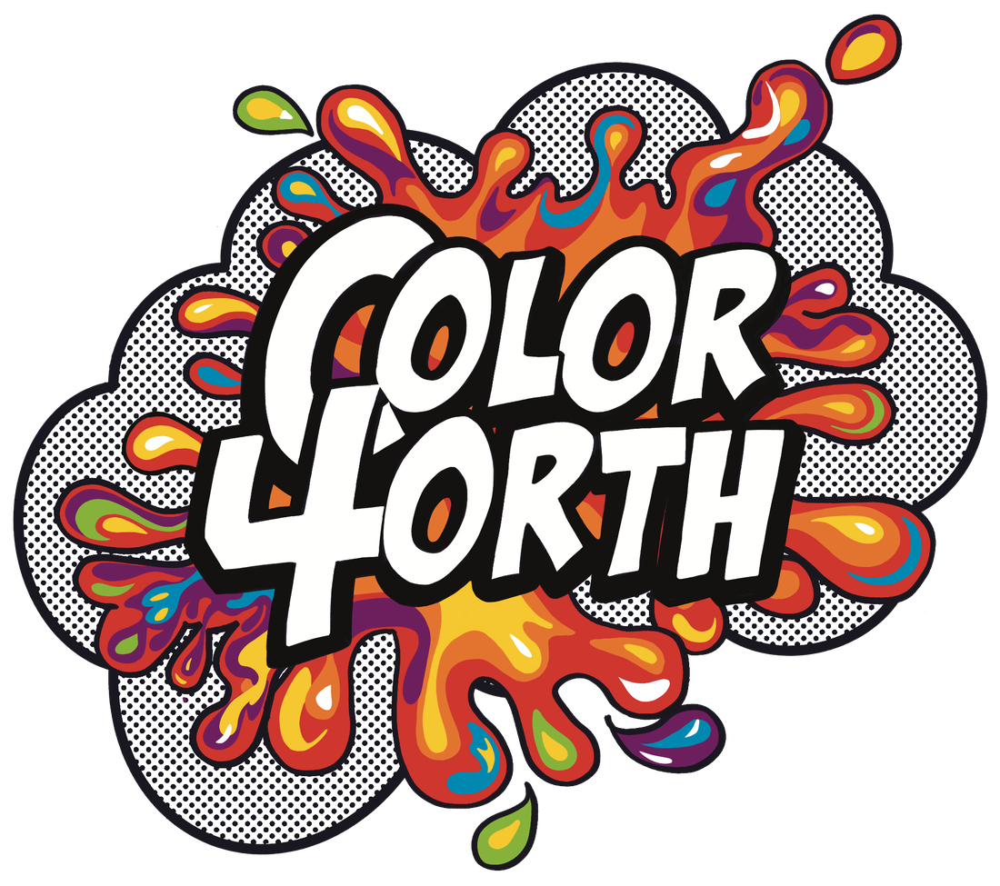

Color4orth turns comic pages and coloring pages into an open canvas. Inkers upload the artwork, Colorists bring it to life, and every finished page forks into something new — with Inkers earning a share when their pages get colored.

Color4orth only works because two different people show up: the Inker who draws the page, and the Colorist who brings it to life. Here's what each side actually does.
Browse comic pages and coloring pages uploaded by Inkers on Fork Art — anything from a quick sketch to a full comic panel.
Real brushes, not tap-to-fill zones. Full color. No boundaries. The line art stays put.
Share your version, or let someone else fork it and take it somewhere new.
Any black-and-white comic page or coloring page with a transparent background — Color4orth handles the rest.
Every finished, posted page becomes part of your lineage on Fork Art — visible, forkable, yours.
Every colored page adds to your lineage on Fork Art, and every subscriber who colors it is a chance to earn.
Every page on Color4orth lives on Fork Art's lineage graph. A black-and-white original can be colored a dozen different ways, and each one of those can be forked again — remixed, recolored, taken somewhere the original Inker never expected.
one original → three colorists → five forks, and counting
Post a page, and every Colorist who picks it up is a chance to earn. The more your pages get colored, the more you make.
The first 10 Inkers to join are locked at 95% — for good. The next 90 are locked at 80% — also for good. After that, it's 70/30, same as everyone. Early just means early — there's no catch, and no step-down later.
Become a founding InkerColor4orth lives inside the Fork Art app — free to download, free to color.
Get Fork Art →